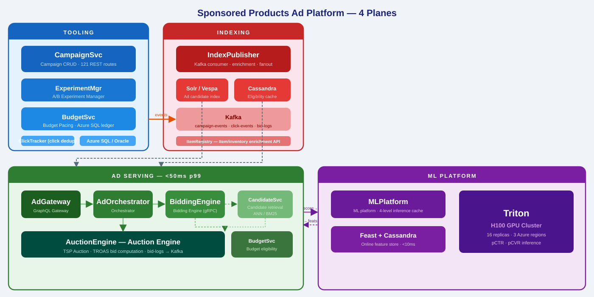
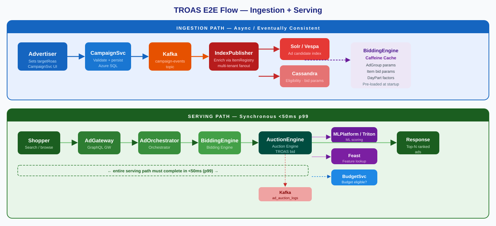
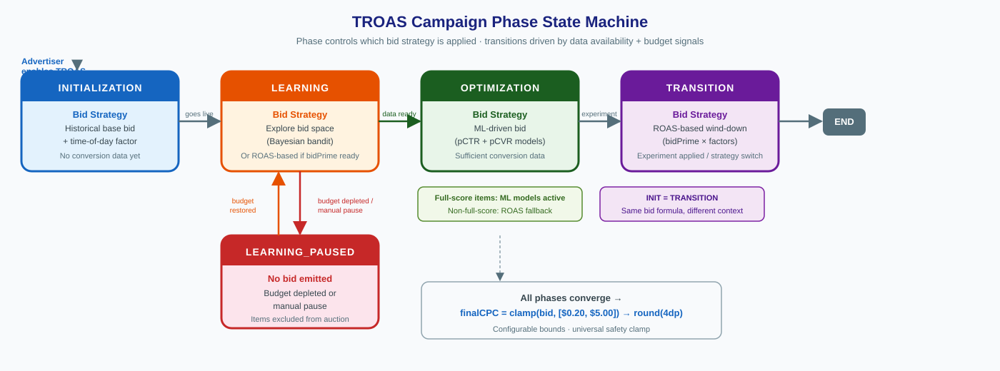
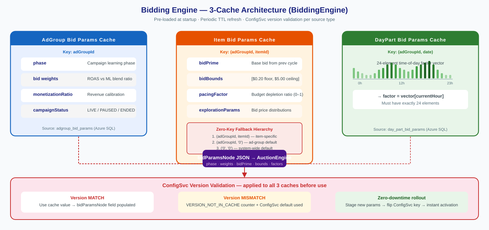
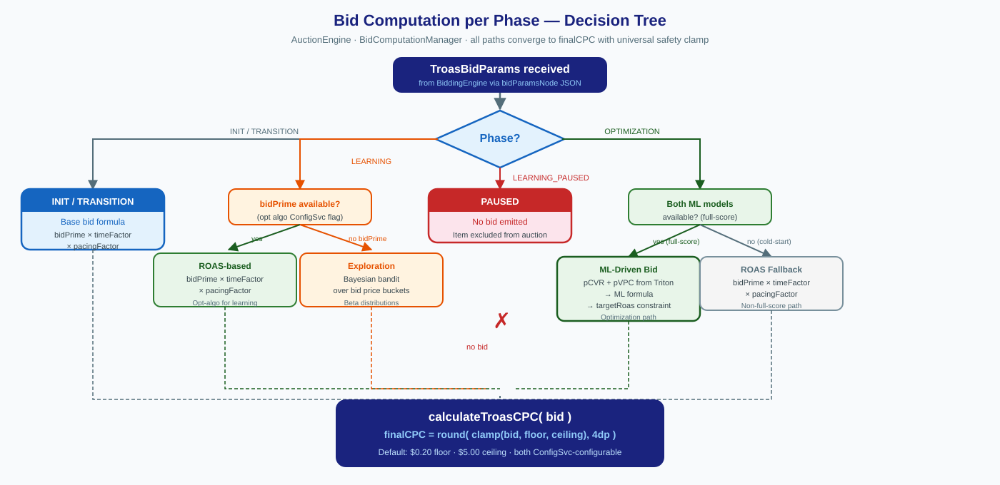
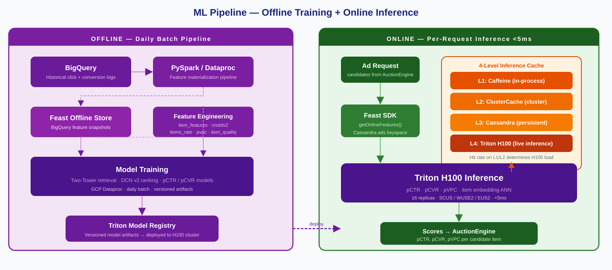
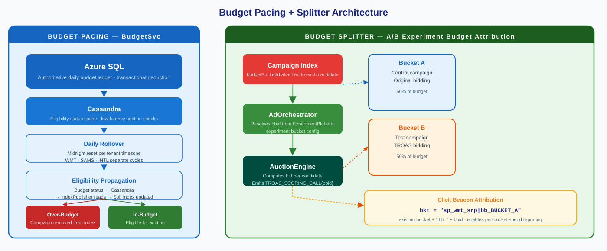
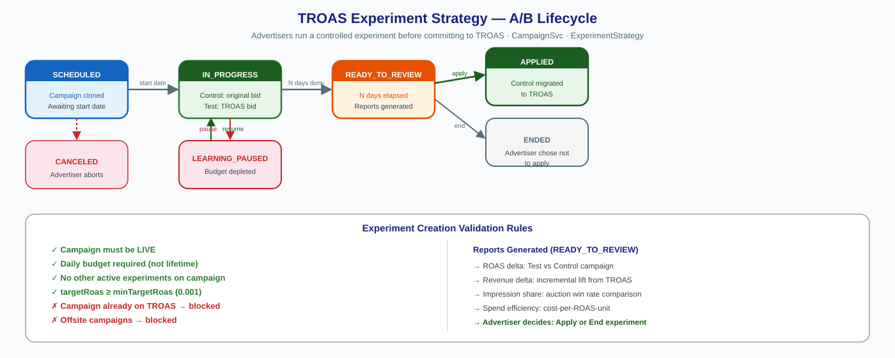

Sponsored Products Ad Platform — Deep Dive
Harish G · April 2026


Target Return on Ad Spend — automatic bid adjustment to hit an advertiser-configured revenue target
A human cannot compute the right bid for 10M campaigns at 12,000 auctions/second. Even rule-based systems can't adapt to real-time demand signals.
targetRoas = 4.0 means: for every $1 spent on ads, generate $4 in product revenue. The system maximises impressions subject to this constraint.

Async + eventually consistent. Lag between campaign edit and new bid appearing in serving. Protobuf-encoded TROAS fields travel through the pipeline.


For item bid params:


Over-budget campaigns are removed from the Solr/Vespa index via: BudgetSvc writes to Cassandra → IndexPublisher reads → index updated. Eventually consistent with ~minutes lag.

| Decision | Chosen Approach | Alternative | Reason |
|---|---|---|---|
| Auction type | True Second Price (TSP) | First Price | Incentive-compatible; advertisers bid true value; stable equilibrium |
| Bidding engine | Sharded gRPC (BiddingEngine) | Monolith | Hot campaigns don't starve others; per-shard scaling |
| Feature store | Feast + Cassandra | Redis | Cassandra TTL + compaction fits feature lifecycle; cheaper at scale |
| Ad index | Solr + Vespa | Elasticsearch | Vespa native vector ANN + BM25 hybrid in one system |
| Bid param cache | 3-tier Caffeine (JVM) | Memcached / Redis | In-process; zero serialization cost; TTL-based pre-load |
| Item params scale | Zero-key fallback (group defaults) | Per-item rows | O(campaigns + overrides) vs O(campaigns × items); startup pre-load stays fast |
Questions?